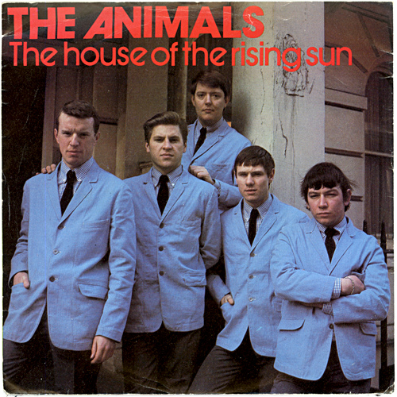

Day 2

The Animals ◆ The House of the Rising Sun ◆ 1964
<2021-06-13 Sun> 1964年，英伦入侵的时代。几个英国的年轻人唱了这首美国新奥尔良的民谣——讲述一个新奥尔良男孩的悲惨人生，告诫兄弟姐妹不要重蹈覆辙。
There is a house down in New Orleans
They call the Rising Sun.
And it's been the ruin of many a-poor boy
And me—oh, God—I'm one
My mother was a tailor
She sewed these new blue jeans
My sweetheart was a gambler, Lord
Down in New Orleans
Now the only thing a gambler needs
Is a suitcase and a trunk
And the only time he's satisfied
Is when he's on a drunk
He fills his glasses up to the brim
And he'll pass the cards around
And the only pleasure he gets out of life
Is ramblin' from town to town
Oh, tell my baby sister
Not to do what I have done!
But shun that house in New Orleans
They call the Rising Sun
Well it's one foot on the platform
The other foot on the train!
I'm goin' back to New Orleans
To wear that ball and chain
I'm a goin' back to New Orleans
My race is almost run!
I'm goin' back to end my life
Down in the Rising Sun
There is a house in New Orleans
They call the Rising Sun
It's been the ruin of many a-poor boy
And me—oh, God—I'm one